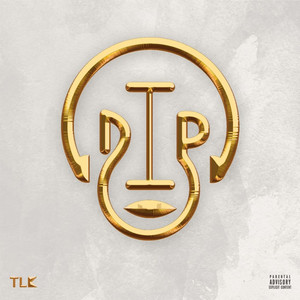

Dip Doundou Guiss a réussi à atteindre le million de vues sur Youtube en 48 heures avec sa chanson« Musiba ». Une première dans l’histoire du hip-hop sénégalais. 1 million de vues en 2 jours Le rappeur Dip a battu le record de vues en 2 jours dans le milieu du hip-hop.


Le 4 novembre 2016, DIP Doundou Guiss sort son premier album TLK (Taay Leu Kagn). Un album de 16 titres qui atteint la barre des 7000 ventes en une semaine seulement, du jamais vu dans le rap sénégalais.
Sortie le 28 Novembre 2019,Dip doundou Guiss à explosé les ventes de son deuxieme album LNN(Lo Niémé Niakk) avec 200 millions FCFA en moins de 48 h …
Plus de 137 millions sur les commandes de kit album casque,plus de 80.millions sur les vente en ligne (clé usb et téléchargement) et 30000 exemplaires vendus (physique et en ligne) et plus de 22millions de streams ."Un record jamais égalé dans l’histoire du rap Galsen" .
Dip Doundou Guiss a aussi fait beaucoup de concerts à guichets fermés :
*2 au cices
*1 à Iba Mar
*1 à sorano
*1 à Adrien Senghor
*2 à Paris
*1 au Belgique
*2 en Italie
*1 au Candada